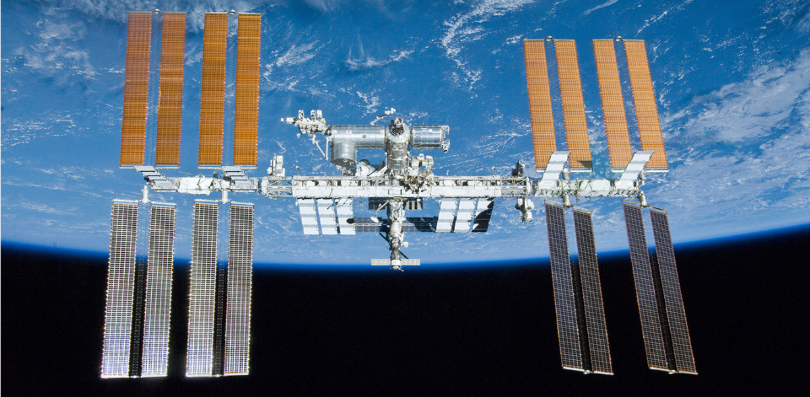

Período 4
1980-2000
Primeiro voo do ônibus espacial Columbia (STS-1):
A NASA lança o Columbia, iniciando o programa de ônibus espaciais, que possibilitou missões frequentes à órbita terrestre e o transporte de satélites e módulos para futuras estações espaciais.
Em abril de 1990, a NASA, em parceria com a ESA (Agência Espacial Europeia), lançou o Telescópio Espacial Hubble, um dos instrumentos mais revolucionários da história da astronomia. Posicionado em órbita terrestre baixa, a cerca de 550 km de altitude, o Hubble foi o primeiro grande telescópio a ser colocado fora da atmosfera da Terra, o que permitiu obter imagens extremamente nítidas e detalhadas do universo, livres da distorção atmosférica.
Em 1995, os astrônomos Michel Mayor e Didier Queloz anunciaram a descoberta do primeiro exoplaneta confirmado orbitando uma estrela semelhante ao Sol: 51 Pegasi b, localizado a cerca de 50 anos-luz da Terra, na constelação de Pégaso. Essa descoberta foi feita utilizando a técnica de velocidade radial, que detecta pequenas variações no movimento de uma estrela causadas pela gravidade de um planeta orbitando ao seu redor.
Em 1998 teve início um dos maiores projetos de cooperação internacional da história: a construção da Estação Espacial Internacional (ISS – International Space Station). O primeiro módulo, chamado Zarya, foi lançado pela Rússia em novembro daquele ano. Poucas semanas depois, a NASA enviou o módulo Unity, que se acoplou ao Zarya, dando início à montagem da estação em órbita.
A ISS foi fruto de uma parceria entre cinco grandes agências espaciais: NASA (EUA), Roscosmos (Rússia), ESA (Europa), JAXA (Japão) e CSA (Canadá). Mais de 15 países participaram direta ou indiretamente do projeto, que se tornou um símbolo da colaboração científica global em meio ao fim da Guerra Fria.
“A exploração do espaço será feita em paz, para benefício de toda a humanidade.”
– Declaração da cooperação internacional na construção da Estação Espacial Internacional (1998)


